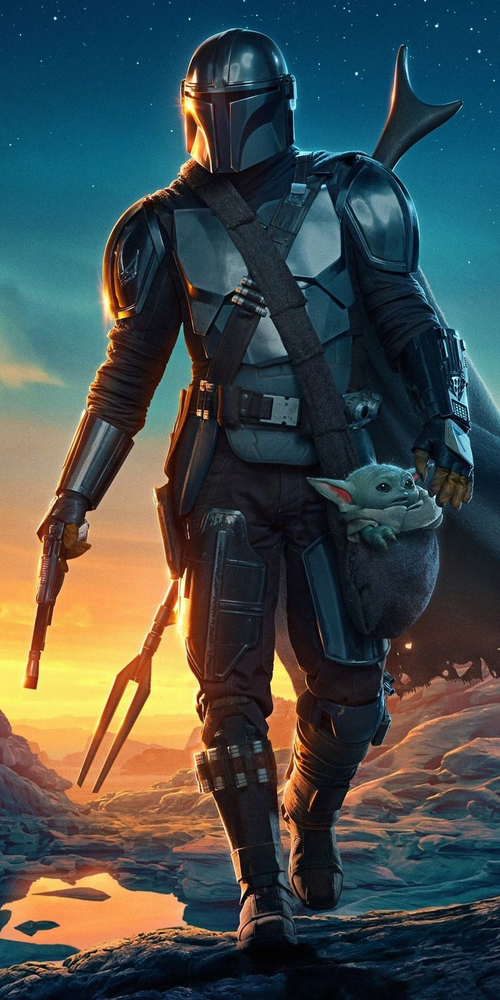
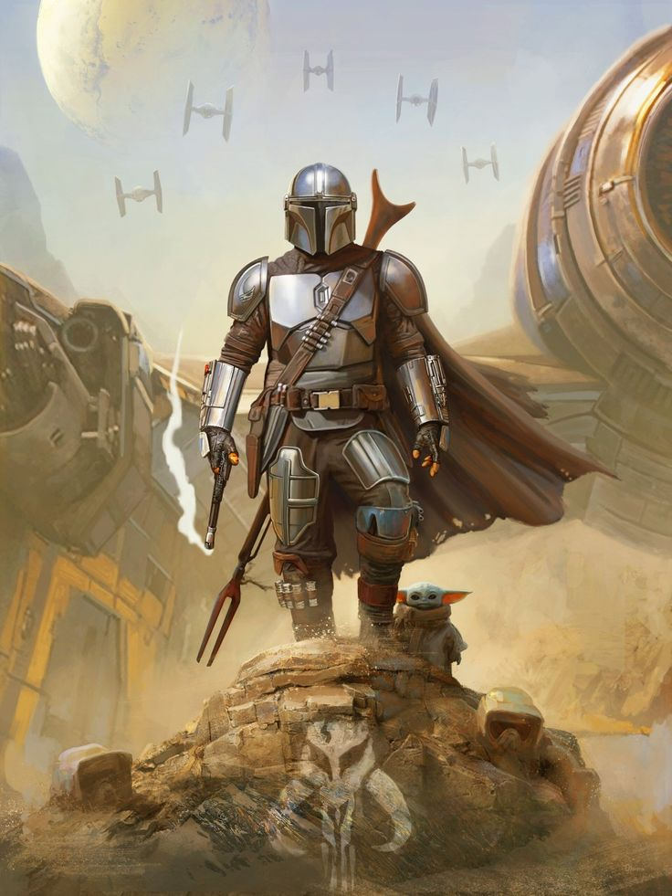

Mando

{kind=link}
Din Djarin était un chasseur de primes mandalorien aguerri portant une armure en beskar qui sévit durant les premières années de la Nouvelle République. Souvent appelé "Mandalorien" ou simplement "Mando", il était un guerrier talentueux, mais pas infaillible. Alors qu'il n'était qu'un enfant durant la Guerre des Clones, les parents de Din Djarin furent tués lors d'une attaque de droïdes de combat séparatistes. Orphelin, il fut recueilli par les Mandaloriens qui devinrent sa deuxième famille et l'élevèrent sur Concordia. Depuis ce jour, le jeune garçon détestait les droïdes et n'avait plus ôté son casque en face d'un autre être vivant. Din Djarin s'entraîna dur et devint un fier combattant avec les années. Plutôt jeune dans sa carrière de guerrier, il ne disposait toutefois pas encore d'un blason personnalisé. Alors que la galaxie était en pleine guerre civile, Mandalore, sous contrôle impérial, fut le théâtre d'une Purge sanglante. A partir de ce moment là, on le suppose, Din Djarin embrassa la carrière de chasseur de primes. Il était désormais un membre à part entière de la Tribu, ces mandaloriens ayant échappé à la Purge et vivant cachés. Les années passant, il s'émancipa peu à peu et proposa ses talents au plus offrant. A un moment, Djarin travailla avec un certain Ranzar Malk et deux Twi'lek frère et sœur, Qin et Xi'an. Cette dernière fut sa compagne pendant un temps, jusqu'à ce qu'il la quitte pour suivre une autre voie, ce qui lui resta en travers de la gorge. Dans les années suivant la bataille d'Endor, correspondant aux premières années de la Nouvelle République, le Mandalorien travaillait pour la Guilde des Chasseurs de Primes de Greef Karga et utilisait son vaisseau, le Razor Crest, pour transporter ses proies piégées dans la carbonite. Armé de son bâton sniper amban et de tout un arsenal, sa réputation le précédait et ses talents de tireur aguerri étaient souvent sollicités.
Après avoir retrouvé un individu mythrol sur Maldo Kreis et éliminé un ravinak, Din Djarin livra sa proie ainsi que trois autres cibles basiques à Greef Karga sur Nevarro pour une petite somme en crédits Mon Calamari. Il se vit ensuite confier une mission qui sortait de l'ordinaire : en effet, il devait récupérer les informations directement auprès d'un client anonyme qui était protégé par quatre Stormtroopers. La mission semblait relativement simple : retrouver l'Atout, un personnage d'une cinquantaine d'années dont seule la dernière position était connue. La récompense en revanche était alléchante : une cargaison complète de beskar. Le client anonyme offrit un premier échantillon du précieux métal pour motiver le chasseur de primes, qui accepta.
 Avant d'entamer sa mission, le chasseur de primes se rendit dans un repaire souterrain où d'autres Mandaloriens montaient la garde, et se rendit auprès de l'Armurière qui lui conçut, à partir de l'échantillon de beskar, une épaulière vierge de tout blason. Djarin mit ensuite le cap sur Arvala-7 avec le Razor Crest, où il fut surpris et attaqué par deux Blurrgs sauvages. Un vieil Ugnaught lui vint en aide et neutralisa les deux bêtes avant de le conduire jusqu'à sa ferme où il cultivait de l'humidité. Kuiil proposa au chasseur de primes de lui montrer où se tenait sa proie, emplacement qu'il connaissait bien car beaucoup s'y étaient rendus avant lui. Le Mandalorien accepta, tout d'abord étonné par la générosité de son hôte, mais dut apprendre à monter un Blurrg avant de poursuivre son chemin. Une fois chose faite, Kuiil l'accompagna jusqu'à un bastion éloigné tenu par des mercenaires niktos et trandoshans. L'Ugnaught refusa toute sorte de paiement, car seul le fait de savoir que les bandits seraient éliminés de cette région lui suffisait. Din Djarin analysa donc le terrain et fut surpris de constater la présence d'un autre chasseur de primes de la Guilde, le droïde IG-11. Ce dernier élimina plusieurs Niktos avant de se retrouver face à un bastion complètement blindé et impénétrable. Le Mandalorien proposa alors son aide et de partager ensuite la récompense. Les deux chasseurs de primes affrontèrent donc les mercenaires mais se retrouvèrent bientôt dépassés. IG-11 enclencha aussitôt sa procédure d'autodestruction : Djarin lui conseilla immédiatement de plutôt faire diversion pour attirer le feu du canon laser lourd utilisé par un Nikto. Puis, le moment opportun, le chasseur de primes utilisa son grappin pour déstabiliser l'artilleur, l'élimina, puis prit le contrôle du canon laser lourd et nettoya la zone. Les deux compagnons d'aventure pénétrèrent ensuite dans la forteresse et découvrirent enfin l'Atout : il s'agissait d'une petit être vert aux oreilles pointues qui était loin de ressembler à une personne de cinquante ans. Sans hésiter, le Mandalorien détruisit IG-11 quand celui-ci s'apprêta à éliminer l'Enfant. Le chasseur de primes voulait comprendre pourquoi ce petit être intéressait autant le Client.
{kind=link}